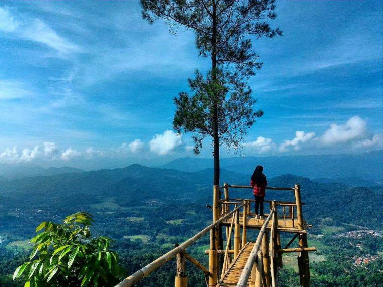

1.kawah putih
Kawah Putih yang sudah banyak dikenal orang akan keindahannya ini terletak di puncak gunung Patuha, Ciwidey, Bandung Selatan sehingga menawarkan udara sejuk dengan suhu 8 sampai 22 derajat. Dalam perjalanan menuju tempat wisata di Jawa Barat ini, Anda juga bisa menikmati perkebunan teh tua dengan suasana yang lain bila dibandingkan dengan perkebunan teh pada umumnya seperti yang ada di kawasan Lembang dan Puncak. Bersiaplah untuk terpukau dengan keindahan Kawah Putih yang begitu elok dan romantis. Hal ini disebabkan karena suasana unik di atas danau kawah yang dipenuhi kabut tebal serta warna air danau yang terlihat berwarna putih atau coklat susu. Bila cuaca sedang panas, warna air danau terkadang berubah menjadi warna biru kehijauan yang menawan.
2.Stone garden
Stone Garden yang berlokasi di Gunung Masigit, Cipatat sangatlah eksotis dan cocok sebagai tempat mengambil foto pre-wedding sehingga mulai viral saat masuk ke media sosial Facebook. Sebelumya tidak banyak orang tahu keindahan yang tersembunyi dari atas bukit Stone Garden. Padang bertabur bebatuan ini begitu menakjubkan terutama di kala pagi hari atau di senja hari saat matahari tenggelam. Setelah sedikit menjelajah bebatuan alamiah bekas danau zaman purba ini, Anda bisa menikmati pemandangan fenomenal dari atas bukit. Selain hamparan pemandangan luas yang tersaji, sebuah taman batu di dataran tinggi di atas bukit ini akan membuat Anda bak sedang berwisata ke luar negeri.
3. Green canyon
Green Canyon yang berlokasi di Desa Kertayasa, Pangandaran ini merupakan tempat wisata alam yang menyimpan beribu pesona, menyajikan keindahan dalam bentuk batu-batu stalaktik yang begitu menawan. Pengunjung bisa menikmati tebing tinggi dengan Sungai Cijulang yang mengalir di bawahnya serta menjelajahi gua di sekitar sungai sambil berburu spot foto. Anda juga bisa ikut mencoba body rafting menyusuri sungai di bawahnya sepanjang 3 km, melewati pepohonan hijau di kanan kirinya.
4. Curug cikaso
Curug Cikaso yang terletak di Desa Ciniti, Sukabumi Selatan ini memang belum begitu viral, namun keindahan air terjunnya tidak diragukan lagi. Tempat wisata di Jawa Barat ini terdiri dari tiga air terjun yang berdampingan dan kolam di bawahnya memiliki warna air biru kehijauan yang eksotis. Ketinggian air terjun yang mencapai 80 meter serta lebar tebing 100 meter ini menyuguhkan pemandangan limpahan air yang elok dan menawan serta dikelilingi dengan hijaunya pepohonan.
5. Bukit panembongan
Kuningan pun tidak mau kalah. Di tempat wisata di Jawa Barat yang terletak di Desa Tembong, Garawangi ini Anda bisa menyaksikan keindahan hamparan hutan pinus yang terawat dan dekat dengan sumber air dari sudut pandang yang lain. Layaknya di The Lodge Maribaya yang berlokasi di Lembang, di tempat wisata di Jawa Barat ini juga terdapat dua gardu pandang yang terbuat dari bambu yang mana merupakan tempat pengunjung bisa menikmati suguhan panorama yang ciamik dan berhawa segar.
6. Kampung karuhun
Kampung Karuhun merupakan tempat wisata terpadu dengan konsep eco park yang memadukan keindahan alam dan fasilitas wisata. Oleh karenanya, tempat wisata di Jawa Barat ini sangat cocok bagi Anda yang ingin berlibur di daerah Sumedang. Anda bisa menyaksikan area persawahan dan hutan tropis yang menghijau di tempat wisata yang berlokasi di Citengah, Sumedang Selatan ini. Selain itu, pengunjung juga bisa menikmati jernihnya air sungai dan udara sejuk, serta berjalan-jalan di antara perkebunan teh yang terletak di ketinggian. Bagi yang hobi selfie, terdapat banyak spot foto menarik, salah satunya adalah gembok cinta.
7. Nasi uduk
Nasi uduk adalah nama sejenis makanan terbuat dari bahan dasar nasi putih yang diaron dan dikukus dengan santan dari kelapa yang di parut, serta dibumbui dengan pala, kayu manis, jahe, daun serai dan merica. Makanan ini kemudian dihidangkan dengan emping goreng, tahu goreng, telur dadar/telur goreng yang sudah diiris-iris, abon, kering tempe, bawang goreng, ayam goreng, timun dan sambal dari kacang. Makanan ini biasanya lebih sering dijual di pagi hari untuk sarapan dan malam hari untuk makan malam.Pada malam hari,biasanya nasi uduk dijual di warung pecel lele, yaitu warung yang menjual nasi uduk beserta lauknya, seperti lele, ikan mas, ayam bakar,Semur jengkol, dan lain lain.